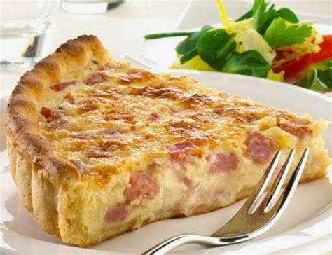

Quiche Lorraine

Description
A savoury French tart with a filling of cream, cheese, eggs and bacon in an open pastry case
Ingredients
- 1 rouleau de pâte brisée ou feuilletée
- 100g de poitrine fumée
- 50g de gruyère râpé
- 40cl crème fraîche épaisse
- 20cl crème liquide
- 3 œufs entiers
Steps
- Préchauffer le four à 210°C
- Dérouler la pâte dans un moule à rebord assez haut et piquer le fond en plusieurs endrouts à l'aide d'une fourchette
- Dans un saladier, mélanger les œufs entiers, les jaunes et la crème fraîche à l'aide d'un fouet
- Saler, pivrer, et parfumer avec la noix de muscade
- Répartier les lardons sur le fond de la tarte. Couvrir avec la préparation aux œufs et parsemer ensuite de gruyère râpé
- Enfourner la quiche à 210°C et faire cuire environ 30 à 35 mn
Home